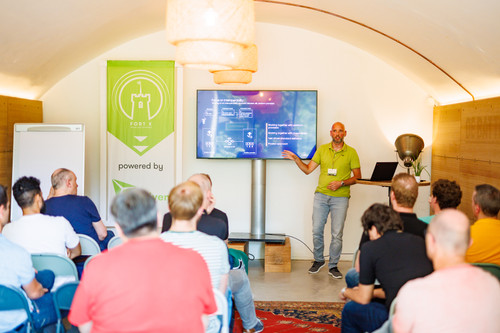
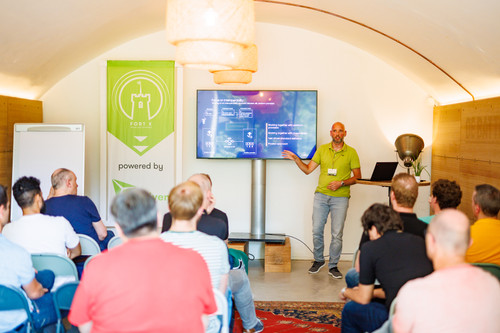

In the Media
- Open Finance Appathon: YTS API Deep Dive
- Practitioner’s guide to API strategy
- Running multi cloud Openshift integrations
- Open source helps Schiphol fly to multi clouds

Presenting at JDriven Fort X conference
API's you can trust

Presenting at JDriven Fort X conference